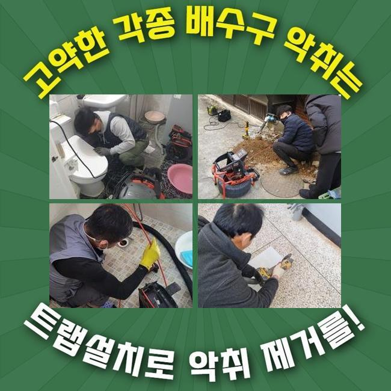
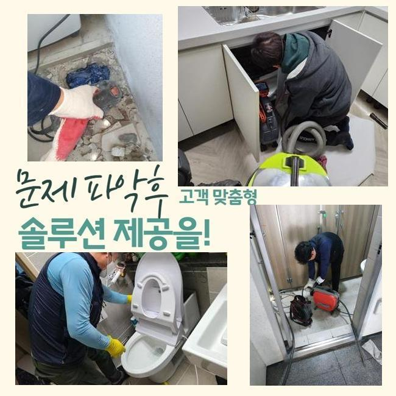
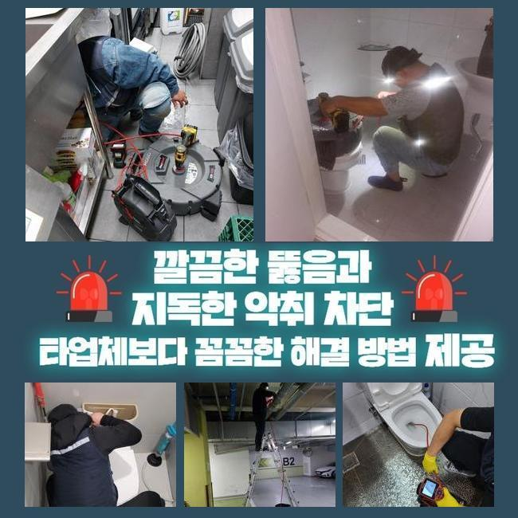
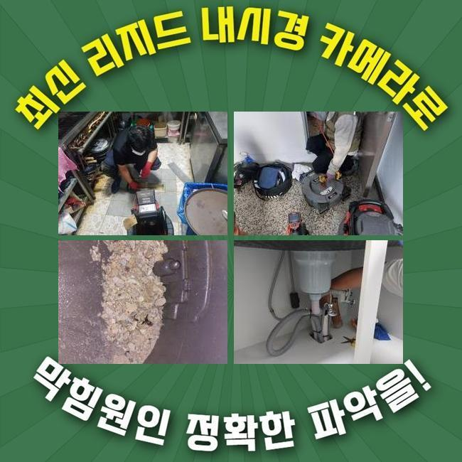
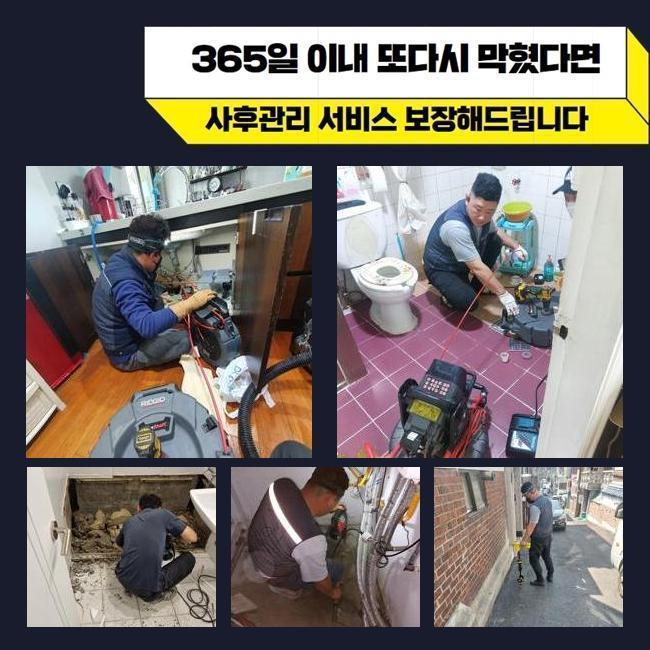
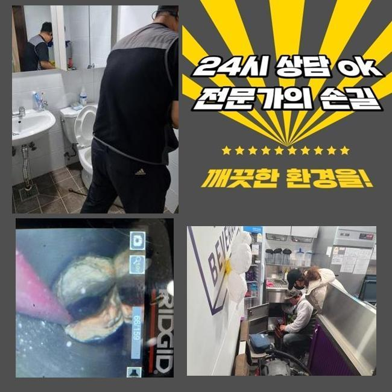
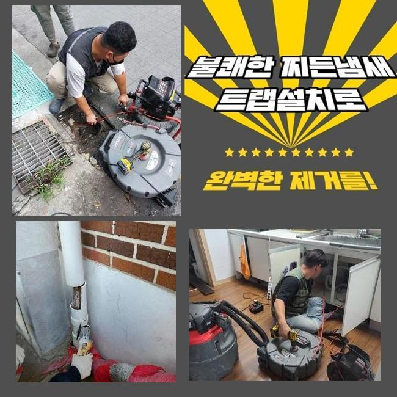

🏠 성북 싱크대뚫음 강북 배관막힘
용인 싱크대막힘 전문 시공 후기

📋 작업 개요
- 위치: 용인
- 서비스 유형: 싱크대막힘, 하수구막힘, 배관막힘, 역류해결, 뚫는업체, 배관청소, 고압세척, 배관보수, 악취차단
- 작업 일시: 2024. 12. 7. 21:59
- 업체명: 하수구수사대 (010-5615-2118)
🔍 문제 상황
성북 싱크대뚫음 강북 배관막힘
주방시설이나 욕실에서 정상적으로 배수기능이 작동하지 않는다면 갑갑하고 혼자서 해결이 안되는 상황이기 때문에 전문가를 알아보게 되기 마련이죠
이번 글에서는 그것에 관계된 관로 장애 현상을 소개해드릴까해요
우리팀이 출장간 손님의 거주지는 3~4일 전 배관이 막혀버려서 일상에 장애를 야기하고 있었답니다
관로가 차단되면 수도가 신속히 소멸되지 않기에 악취가 발생할 가능성이 높고 중대한 장애를 불러올수도 있어요
그러하기에 빠른 처리가 요망되며 고통을 겪고 있으신 손님께서는 제때 전문적인 수리를 받는게 좋아요
해당 사태를 처리하려 우선적으로 체크해봐야 되는건 배수와 관계된 시설물이죠
관로 이용등에 부정적인 행동요소를 갖추고 있으시다면 배수시스템이 올바르게 가동하지 않는 경우도 많아요
그러하기에 정기적인 세척과 진단과정을 통하여 상황에 대비하는게 좋아요
시공할땐 내시경cctv를 이용 심각한 막힘이 상존하는 지점을 꼼꼼히 확인한뒤 세정을 해나갑니다
청소가 올바르게 되기 위해선 밀도있는 체크가 요망되서죠
노폐물이 쌓였던 지점에선 희석약품을 넣어서 완전히 없어지도록 세심히 업무를 시행했어요
소제를 진행함에 따라서 찌꺼기들이 사라지긴 했으나 전체적 세척까지는 예측보다 긴 작업시간이 소요됐죠
단단해진 잔류물을 없애려 분쇄기계를 가져왔습니다

🔎 원인 분석
💡 전문가 진단: 정밀 진단 장비를 사용하여 슬러지의 고착 여부를 판명하고 타격/세척 작업을 실시했습니다.
기기 앞부분에 결속된 체인노커를 이용해 찌꺼기를 떨어뜨려 제거가 가능해요
슬러지가 관로의 벽에 적체되어 있었기에 플렉스샤프트 기기를 사용하여 초기작업을 계획했고 동반하여 입구의 오염물질과 침전물까지 제거하기로 했죠
이걸 그냥 놔두면 심대한 트러블이 야기될수 있기 때문에 신속한 정리가 불가결하다는 말씀을 드렸습니다
해당 상황에서 시공할때는 이차고장이 안생기게 집중해야 됩니다
파이프에 타격이 가해지면 그부분으로 하수가 쏠리고 균탁이 일어나기도 한답니다
그렇기에 해당 기계를 쓸땐 필히 충분한 경험이 동반되어야 해요
거기에 더해 빠르게 의뢰하여 이물질이 쌓이지 않게끔 만드는게 중요해요
누설을 검사하려면 배수 속도를 살펴보고 배관카메라로 배수관 내측 전체를 살펴야 해요
만일 그때 균열이 발굴됐다면 적합한 보수 등의 민첩하게 해결을 이행해야 됩니다
저희팀은 이렇게 급작스럽게 나타나는 장애에 대처하는 의미로 관계된 장비들을 항상 가지고 출동하죠
하수구에서 발현되는 잔류물의 상태를 보면 관련없는 슬러지가 발견될때가 있는데요
다수가 사용하는 장소라면 더 곤란한 형국으로 발전할수 있어요
그러한 사태가 벌어지면 관로가 약해져 누설까지 표출될수 있으므로 정확한 검점이 필요한 것입니다
내시경설비로 문제의 공간을 검증하는 단계가 빠져버린다면 본질적 부분을 찾아내지 못할수도 많은데요

🔧 작업 과정
내시경cctv를 이용 관로 내부를 탐지하며 노폐물과 단단한 물체들로 배수길이 막혀버렸다는 사실을 진단내렸습니다
내버려두면 찌꺼기들이 위로 솟구칠수 있으므로 빠른 정리가 필수였습니다
파이프는 상당부분 오손되어 있었으며 음식물 다양한 오물들과 석회성분이 쌓여 있는 상황이었어요
이때문에 탁수가 정상적으로 흘러가지 못해 막혀버린 것이었죠
그러므로 분쇄와 세척작업이 요청되었어요
안에 들어간 슬러지를 파악하고자 내시경cctv를 이용했고 그에 적법한 작업을 시작하였어요
막힘 상황을 정리하려는 설계를 만들고 작업을 수행했어요
그 결과 관통로를 안정적으로 확보할수 있는 상황이었어요
또 세척 업무간 발생하는 슬러지가 하수구로 유입되어 누설을 야기할수 있기에 미리 사전적으로 차단하시는게 합당합니다
그것을 막으려면 수리할때 배관차단을 확실히 하여 오염물질이 들어가지 않도록 조치하는게 좋습니다
해당 대처를 바탕으로 순탄하게 배관 이용을 할수가 있습니다
관로의 파손을 생각해 차분하게 분쇄공정을 진행하며 내시경cctv를 사용해서 노폐물이 있는 자리를 발견했어요
하수관 하단부엔 경화가 된 찌꺼기가 상존하였고 그냥 놔두면 역류상황까지 나타날 것이란걸 파악했어요
저희는 조심히 찌꺼기를 들어내고 관을 세정하여 물흐름이 원만하게 가동되게끔 조치하였습니다
보는 바와 같이 꼼꼼한 정비를 바탕으로 수도설비의 시스템을 지속시키려는 태도가 계속될 필요가 있죠
전체적인 시공을 통해서 문제들을 소멸시키고 사후 출몰가능한 현상들도 예방할수 있었답니다
의뢰자께선 본질적인 부분을 발견하고 결과값을 확보하는 절차들이 중대한 이슈라는걸 느꼈다고 하시네요
효율적으로 시공을 이어나가려면 샤프트기계를 활용이행해야 됩니다
이것이 없다면 노폐물을 면밀하게 세척해내기 힘겨우며 몇달 가지않아 재차 정체가 나타나기 쉽습니다
석션기계도 이에 준하는 임무를 도맡고 있다는걸 알립니다
배관 고장은 일단 발생하면 저절로 없어지기 어렵답니다
그렇기에 정기적 진단과정을 수행하여 고장을 방지하고 표출된 것들은 신속하게 대응하여 해결수행해야 해요


✅ 작업 완료
그렇게하면 배관과 관계된 장애현상을 최소화할 수 있는데요
분리배출을 빈틈없이 진행하고 주변을 청결하게 유지하시면 문제없는 일상을 누리실수 있답니다
우리팀은 고객님의 스케줄에 맞춰 날짜를 잡은뒤 방문드리고 많아요
파이프가 어떻게 차단되었는지 따지지않고 수준높은 도구들과 기술력으로 시공을 해드린다는점을 강조합니다
급작스레 배수관에 고장에 생겼다면 주저하지 말고 문의해주시길 당부드려요
신속하게 처리해드리도록 할게요




⚠️ 주방 싱크대 배관 막힘 예방 수칙
- ✅ 기름기가 묻은 식기나 프라이팬은 설거지 전 키친타올로 반드시 기름때를 닦아내세요.
- ✅ 주기적으로 싱크대 개수대에 뜨거운 물을 가득 받아 한 번에 내려 배관 내부 기름을 씻어내세요.
- ✅ 배수구 거름망을 미세한 필터로 사용하시고 음식물 찌꺼기가 틈으로 새어 들지 않게 관리하세요.
- ✅ 베이킹소다와 식초를 뜨거운 물과 함께 일주일에 한 번씩 부어주면 배관 살균과 막힘 예방에 좋습니다.
💡 핵심 정리
- 확실한 장비 작업(내시경 점검 및 샤프트 스케일링)으로 원인을 뿌리 뽑습니다.
- 작업 후 1년 이내에 동일한 부위 재발 시 100% 무상 A/S 서비스를 보장합니다.
- 서울 · 경기 · 인천 전 지역에 24시간 언제든 긴급 출동할 수 있도록 항시 대기 중입니다.
❓ 자주 묻는 질문 (FAQ)
🚨 용인 싱크대막힘 문제로 고민이신가요?
정확한 원인 진단과 확실한 시공으로 재발 없는 해결을 약속드립니다.
24시간 긴급 출동 | 서울 · 경기 · 인천 전지역 | 1년 내 재발 시 무상 A/S